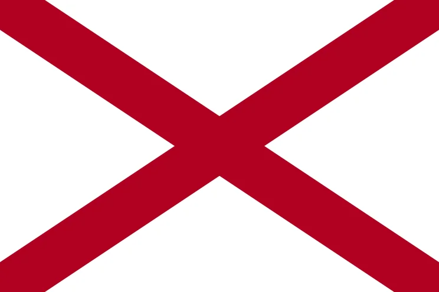

$900
hello people welcome to my shop
100$
100$
100$
100$
Alabama (/ˌæləˈbæmə/ ⓘ AL-ə-BAM-ə)[9] is a state in the Southeastern region of the United States. It borders Tennessee to the north, Georgia to the east, Florida and the Gulf of Mexico to the south, and Mississippi to the west. Alabama is the 30th largest by area, and the 24th-most populous of the 50 U.S. states.[10][11] Alabama is nicknamed the Yellowhammer State, after the state bird. Alabama is also known as the "Heart of Dixie" and the "Cotton State". The state has diverse geography, with the north dominated by the mountainous Tennessee Valley and the south by Mobile Bay, a historically significant port. Alabama's capital is Montgomery, and its largest city by population and area is Huntsville.[12] Its oldest city is Mobile, founded by French colonists (Alabama Creoles) in 1702 as the capital of French Louisiana.[13][14] Greater Birmingham is Alabama's largest metropolitan area and its economic center.[15] Politically, as part of the Deep South, or "Bible Belt", Alabama is a predominantly conservative state, and is known for its Southern culture. Within Alabama, American football, particularly at the college level, plays a major part of the state's culture.